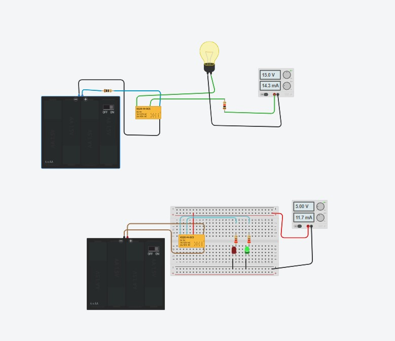
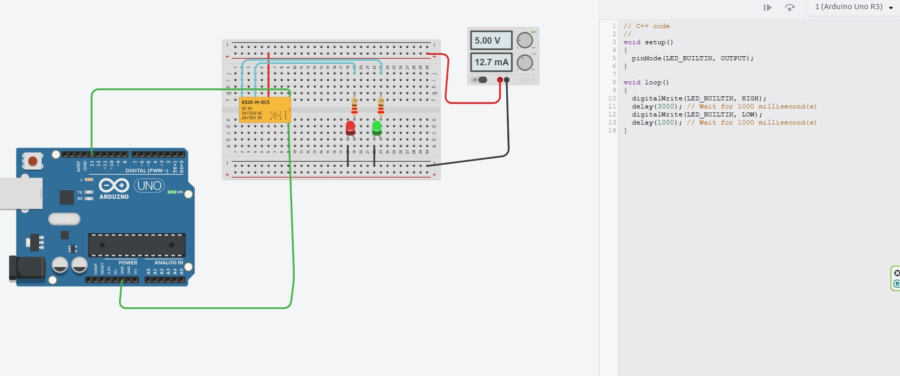

本次實驗由基礎手動控制切換，進階至單晶片自動化控制：

| 評估項目 | 電磁機械繼電器 (EMR) | 磁簧繼電器 (Reed Relay) |
|---|---|---|
| 機械結構 | 線圈、外露鐵芯、擺動銜鐵、拉簧與分立接點 | 充填惰性氣體密封玻璃管＋雙金屬鐵鎳合金彈性簧片 |
| 切換反應速度 | 較慢（約 5 ms ~ 20 ms），受較重銜鐵慣性限制 | 極快（約 0.2 ms ~ 1.0 ms），簧片質量極輕 |
| 接點彈跳 (Bounce) | 彈跳時間顯著（約 1 ms ~ 5 ms），需防突波設計 | 微秒級極小彈跳（< 0.5 ms），訊號失真極低 |
| 耐候與防爆特性 | 接點易受空氣中濕度氧化、硫化，通斷電弧有粉塵風險 | 完全氣密（Hermetically Sealed），耐腐蝕、防爆、耐震動 |
| 驅動功耗 | 較大（約 200 mW ~ 600 mW，需三極管推動） | 極低（約 10 mW ~ 50 mW，許多微控制器可直接驅動） |
| 最大負載容量 | 極高（可達 10A ~ 30A，250VAC，適合動力機械） | 較小（通常 < 1A ~ 2A，30VDC，主要用於精密訊號量測） |
| 電氣切換壽命 | 電氣約 10 萬次級（受接點電弧燒蝕磨損）；機械約 1000 萬次 | 可達 1 億次（10^8 次以上），長效免維護 |
微控制器（如 Arduino Uno）可以藉由程式輸出精準的毫秒級邏輯電位，達成完全自動化的負載排程切換：

Pin 13（板載 LED_BUILTIN）連接至繼電器線圈正極輸入端（綠線）。GND 連接至繼電器線圈接地負極端（綠線），構成單晶片低壓控制迴路。// C++ code - Arduino Uno 繼電器自動週期切換
void setup()
{
// 設定數位腳位 13 (LED_BUILTIN) 為輸出模式 (OUTPUT)
pinMode(LED_BUILTIN, OUTPUT);
}
void loop()
{
// 【階段一：線圈通電激磁】輸出 5V 高電位，繼電器吸合至 NO
digitalWrite(LED_BUILTIN, HIGH);
// 維持通電狀態 3000 毫秒 (3 秒) ➔ 綠燈亮、紅燈滅
delay(3000);
// 【階段二：線圈釋放斷電】輸出 0V 低電位，繼電器彈簧拉回 NC
digitalWrite(LED_BUILTIN, LOW);
// 維持斷電狀態 1000 毫秒 (1 秒) ➔ 紅燈亮、綠燈滅
delay(1000);
}| 階段 | 時長 | Pin 13 電位 | 線圈狀態 | 銜鐵位置 | 紅色 LED (NC) | 綠色 LED (NO) | 外部電流 | 代表意義 |
|---|---|---|---|---|---|---|---|---|
| Phase 1 | 3.0 秒 | HIGH (+5V) |
激磁吸合 | 切換至 NO | 🔴 熄滅 (OFF) | 🟢 點亮 (ON) | 12.7 mA | 機具運轉中 (RUN) |
| Phase 2 | 1.0 秒 | LOW (0V) |
斷電釋放 | 彈簧拉回 NC | 🔴 點亮 (ON) | 🟢 熄滅 (OFF) | 12.7 mA | 系統待機中 (STOP) |
💡 工程細節說明：原始截圖程式註解為 // Wait for 1000 millisecond(s)，但實際指令是 delay(3000)。單晶片純粹依照指令參數運算，因此實際綠燈運轉時間為 3 秒。
Arduino MCU 驅動與保護電路 繼電器線圈
─────────── ────────────── ──────────
+5V (系統穩壓電源) ─────────────────────┬──────────┐
│ │
┌──────┴──────┐ │
│ 線圈 Coil │ │ 飛輪二極體 (Flyback Diode)
└──────┬──────┘ ▲ 1N4007 / 1N4148
│ (反向並聯)│
├──────────┘
│
Pin 13 ────[ 1kΩ 限流電阻 ]──── 基極 (B) │
┌──────┐ │
│ NPN │ ▼
│ 三極管 ├───── 集極 (C) ──────┘
│(2N2222)
└──────┘
│ 射極 (E)
▼
GND (系統共同接地)設計要素重點：
模型/Agent: Gemini 3.1 Pro / Antigravity
Prompt 原文:
C:\Users\User\Desktop\0917.jpg 這是我設計的兩個繼電器控制電路，兩個設計分別解說繼電器的控制原理，還有控制邏輯。另外補充，繼電器的種類與運作原理，延伸討論到積體電路中繼電器的替代方案
變更摘要: 建立繼電器控制電路與原理解析筆記，包含圖片中兩個電路的運作邏輯分析，並補充繼電器的核心概念及積體電路中的替代方案。
模型/Agent: Gemini 3.8 Flash / Antigravity
Prompt 原文:
將原始的電路設計加入檔案，並利用繪圖進行動態模擬繼電器的運作，另外再設計繼電器磁簧開關與接點的動態展示，最後再增加繼電器的相關應用
變更摘要:
1. 複製並嵌入原始電路設計圖片 (`relay_circuits_0917.jpg`)。
2. 打造四套高互動向量動態模擬畫布（上方 15V 燈泡控制、下方 SPDT 雙色 LED 切換、內部機械接點剖面動作、磁簧開關磁吸動態展示）。
3. 深入擴充電磁式與磁簧式繼電器對比表及車用、工業、物聯網多元應用實務。
模型/Agent: Gemini 3.8 Flash / Antigravity
Prompt 原文:
C:\Users\User\Desktop\arduino.jpg 加入這一個設計圖與程式解說
變更摘要:
1. 嵌入 Arduino 控制 5V 繼電器之 Tinkercad 電路設計圖 (`arduino.jpg`)。
2. 逐行解析 Arduino C++ 程式碼架構、時序真值表（3秒綠燈 / 1秒紅燈）。
3. 新增「動態模擬 5：Arduino 自動化即時動畫」，視覺化呈現 Pin 13 LED 呼吸閃爍、倒數計時條與繼電器接點週期切換。
4. 深度補充單晶片直驅繼電器的 GPIO 超載與反向電動勢 (Back-EMF) 破壞隱患，提供工業級電晶體驅動與飛輪二極體保護電路設計。
模型/Agent: Claude Opus 5.5 (claude-opus-5-5) / Claude Code
Prompt 原文:
檢視所有檔案內容中的敘述與說明，確認概念與敘述的正確性
修正後，將修改內容，附加在每個檔案的最下方區塊並標誌時間戳記與模型代號
確認概念與解釋說明都是正確的變更摘要: 全面檢視概念與敘述正確性並修正：